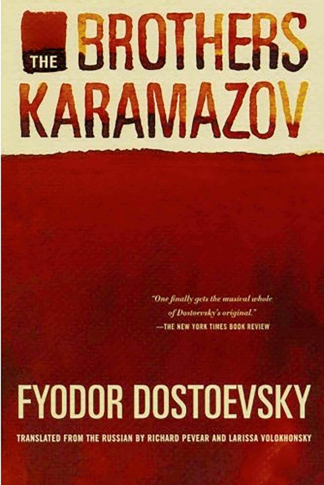
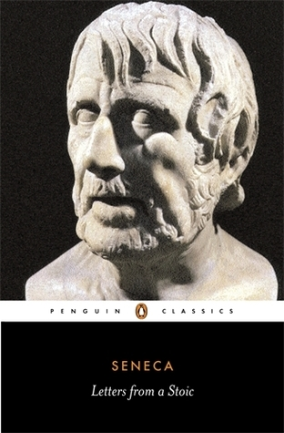
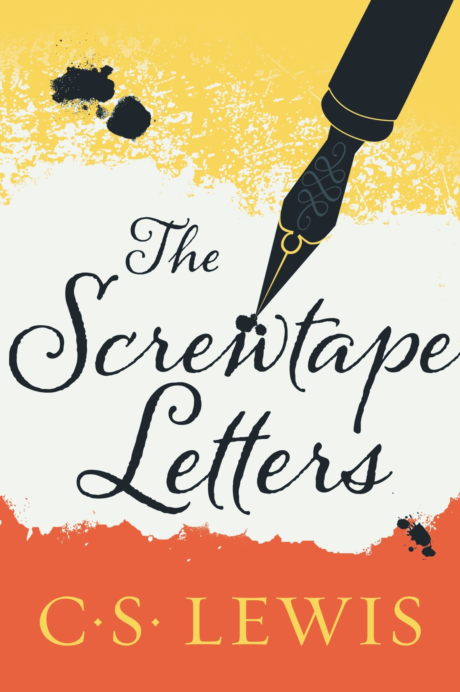

Books
Some things I've read
His ideal is a Man who, having worked all day for the good of prosperity (if that is his vocation), washes his mind of the whole subject, commits the issue to heaven and returns at once to the patience or gratitude demanded by the moment that is passing over him.
- CS. Lewis.
One day is enough for man to know all happiness.
- Fyodor Dostoevsky.
The above are two of my favourite quotes.
The Borthers Karamazov
- Dostoevsky
This book is truly astonishing. It creates a world full
of misery in which there is still joy, happiness and love for
existence. It delineates, through three different brothers (and the rest of the
characters), how the point of view one
takes in life ends up building the base of how one lives. I particularly appreciated
the relationship between Alyosha
and Father Zosima. The wise words of the elder feel as if Dostoevsky himself was
talking to the reader. If you want to
read a novel full of philosophical and psychological content, I’d recommend this
book.
“… look around you at the gifts of God, the clear sky, the pure air, the tender grass, the birds; nature is beautiful and sinless, and we, only we, are godless and foolish, and we don’t understand that life is a paradise, for we have only to understand that and it will at once be fulfilled in all its beauty, we shall embrace each other and weep”.
Meditations
- Marcus Aurelius
 It amazes me that Meditations, a collection of personal
notes by Marcus
Aurelius, was never meant for publication These are Marcus Aurelius' notes and
reflexions, which he wrote whilst
leading the world's biggest empire. It is him guiding and reminding himself of
the best ways to remain calm, joyful, and peaceful throughout a turbulent life. This
book was the
first time I read
about the idea of "love of fate" (amor fati) which I believe is a powerful
principle for
embracing life's challenges with resilience.
It amazes me that Meditations, a collection of personal
notes by Marcus
Aurelius, was never meant for publication These are Marcus Aurelius' notes and
reflexions, which he wrote whilst
leading the world's biggest empire. It is him guiding and reminding himself of
the best ways to remain calm, joyful, and peaceful throughout a turbulent life. This
book was the
first time I read
about the idea of "love of fate" (amor fati) which I believe is a powerful
principle for
embracing life's challenges with resilience.
“Stop allowing your mind to be a slave, to be jerked about by selfish impulses, to kick against fate and the present, and to mistrust the future”.
“To welcome with affection what is sent by fate. Not to stain or disturb the spirit within him with a mess of false beliefs. Instead, to preserve it faithfully, by calmly obeying God—saying nothing untrue, doing nothing unjust. And if the others don't acknowledge it—this life lived with simplicity, humility, cheerfulness—he doesn't resent them for it, and isn't deterred from following the road where it leads: to the end of life. An end to be approached in purity, in serenity, in acceptance, in peaceful unity with what must be”
Letters from a Stoic
- Seneca
Seneca's Letters from a Stoic
is a great introduction to Stoic philosophy through practical, conversational
wisdom. Some key points that stuck with me were: to speak slowly, to mourn; but not
for too long and instead remember with happiness, and to embrace self-honesty above
all. Seneca also teaches
balance: a person of action must find calm, just as a reflective soul should act
decisively. Compared to the introspective Meditations, Seneca's friendly
style makes this book ideal for anyone exploring
Stoicism for the first time.
"Whenever circumstance or chance brings a welcoming thing your way, be
alarmed and suspicious… We think these things are
ours when in fact it is we who are caught… What fortune has made yours is not
your
own.”
“What progress have I made? I am beginning to be my own friend.
Such
a man can never be alone.”
“We should not keep silverware with inlays
of
gold, but at the same time we should not imagine that in doing so there is
proof that we are leading a simple life”.
The screwtape letters
- C.S. Lewis
The Screwtape Letters was an unexpected but very enriching
read. Thanks to
Nacho Narbais for gifting me this book. This work is an insight into why good and
evil matter. It depicts the human soul in a way that shows how it can be lost
to self-destroying practices up to a point in which the same soul doesn't even
realise it any more. It emphasises (in a
new/different way) on how we were made in the image of God - with the freedom to
live with our own will. When reading this, remember everything in this book is
written from a devil's point of view. The Enemy = God.
“The Enemy wants to bring the man to a state of mind in which he could design the best cathedral in the world, and know it to be the best, and rejoice in the fact, without being any more (or less) or otherwise glad at having done it than he would be if it had been done by someone else. The Enemy wants him, in the end, to be so free from any bias in his own favour that he can rejoice in his own talents as frankly and gratefully as in his neighbour’s talents-or in a sunrise, an elephant, or a waterfall.”
For more books and reviews, go to my Goodreads (icon in the footer of the page).